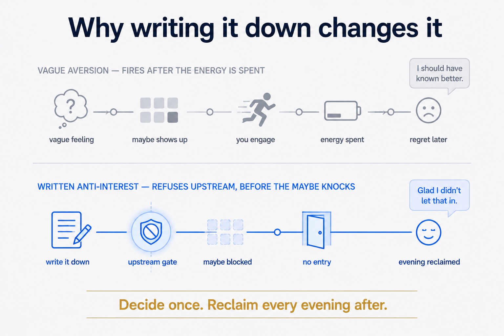
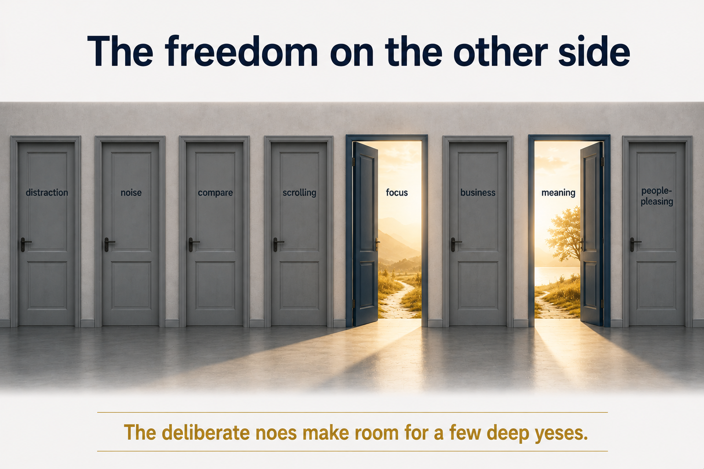

Companion to the systems piece The Filter You're Missing: Why Your System Needs Anti-Interests. That one is about software. This one is about you.
The yes that quietly costs you
We're taught that an open mind says yes. Try everything, stay curious, keep your options open. So most of us walk around with a permanent maybe draped over almost everything — every invitation, every trend, every "you should really get into…". Maybe feels generous. It feels humble.
It's also exhausting. A life of maybe is a life of noise, because nothing is ever ruled out, so everything keeps knocking. Every undecided door stays ajar, and a small draft of attention leaks through each one. You don't notice any single leak. You notice that you're tired and scattered and somehow never got to the things that actually matter to you.
The fix isn't more discipline about your yeses. It's the thing nobody recommends: get specific about your noes.
Anti-interests, for a person
I keep a list — a literal file — of things I am reliably, permanently not interested in. Not "haven't tried." Not "not right now." Things I've genuinely decided are not mine: certain kinds of entertainment, whole categories of hobby, particular flavours of ambition. Next to each, one line on why.
It started as a practical tool for filtering recommendations. But writing it did something I didn't expect. Each line I added felt like a small exhale. Because every "not this" is also, quietly, a "yes, that" — to the things left standing. You can't say what you're for without an edge, and the edge is made of everything you're against.
This is the via negativa: you describe a thing by what it is not. Sculpture works this way — the figure appears as the stone is removed. Identity works this way too. You are not only the sum of your enthusiasms; you are also the shape of your refusals. What you're not is also who you are.
Why writing it down changes it
A vague aversion and a written anti-interest are not the same thing, and the difference is the whole point.
A vague aversion is reactive. It fires after you've already spent the energy — you're three episodes into the show, two hours into the event, halfway through the book before the quiet "why am I doing this?" arrives. The cost is already sunk. You felt the no, but only as regret.
A written anti-interest is upstream. It does the refusing for you, before the energy is spent, so the maybe never gets to knock. It converts a recurring little drain into a one-time decision. You decide musicals, no once — and reclaim every future evening you'd have spent half-deciding it again.

And because it's written, it's honest with you over time. A preference in your head can quietly contradict itself for years. On the page, the contradiction shows. I had "cruises" pencilled in as a hard no — and then caught myself genuinely curious about a very specific kind of cruise. Because the no was written, I could see the clash and refine it, instead of silently arguing with my own instinct. A buried aversion can't be revised. It just nags.
The freedom on the other side
There's a particular calm that arrives once the list exists. The world stops being an infinite menu you're obligated to consider. Whole sections are simply closed — not out of fear, not out of narrowness, but out of knowing. The energy you were spending keeping every door ajar comes back, and it flows toward the few doors you actually walked through on purpose.
This is the opposite of a small life. A life that says yes to everything is the small one — diluted, reactive, shaped by whatever knocked loudest. The deliberate noes are what make room for a few deep, unhurried yeses.

Try it
Open a note. Write the heading: what I'm not interested in. List the ten things you've quietly known for years but never said plainly — and one line each on why. Don't soften them into "not right now." Mean them.
You'll notice two things. First, a strange relief, as if you'd put something down you'd been carrying. And second, sharper than before, the outline of what's left — which is the part that was you all along.
Companion to The Filter You're Missing: Why Your System Needs Anti-Interests. The systems piece builds the filter; this one is about choosing what goes in it.